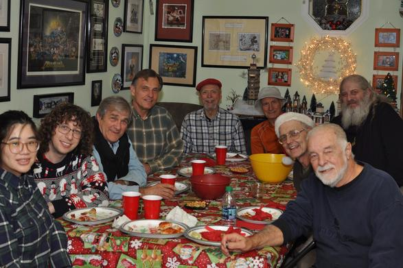

History
In early 1995 a small group of men and women interested in woodworking began meeting at Mountain Mike’s on Hamilton Avenue in San José. By February 1996 it became obvious that this location wasn’t suitable for woodworking demonstrations and the growing membership. Jeff Pohl at Southern Lumber made room available and accepted the group with open arms. Thanks to the efforts of George Blanford and Bill Pritchard, two of the more influential founding members, the club was off to a grand beginning.
The Club’s Library was kicked-off by Tom McDonough and the first speaker was Warren Wise with an Anatomy of Table Saw Kickback. Some of the other informative topics/demonstrations were:
- Making a Good Shop (Anne Fuller)
- How to Make a Winsor Chair (Carl Johnson and Bob Berryman)
- Custom Shaker Furniture (Ambrose Pollack)
- Woodshop Jigs & Fixtures (Sandor Nagyszalancy)
- Stripping & Refinishing (Bob Easthope)
- Professional Finishing with Deft (Raul Jordan)
- DeWalt’s Latest Product Line (Phil Benedetti)
The Club has been fortunate to have had outstanding leaders including George Blanford, Anne Glynn, Bill Pritchard, Larry Lang, Paul Guersch, and Chris Mildebrandt (current President).
After a 3-year stint at Southern Lumber (1996 to 1998), meetings were moved in 1999 to CB Tools in Santa Clara. Then from 2005 to 2016 the Saw Dust Shop in Santa Clara (and later in a location close to San José) hosted the Club. Beginning in January 2019 meetings were held in San José at TheShop.Build, located at 401 Charcot Avenue. As of August 2019, the club now meets at Maker Nexus at 1330 Orleans Drive in Sunnyvale.

December 2019 holiday party: What a great gathering of friends and fellow woodworkers. Paul, our former President, former Vice President, and current member, has hosted our holiday gathering for many, many years and provided years of leadership for the club.
Paul, thanks for all you do!!